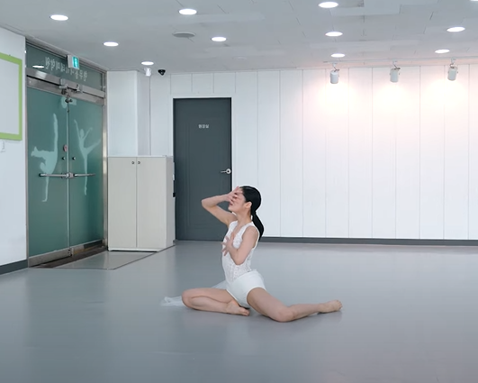
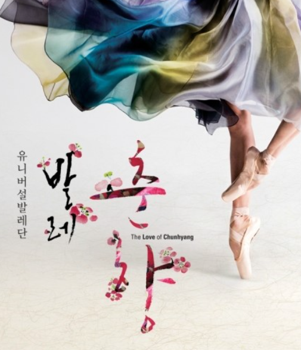
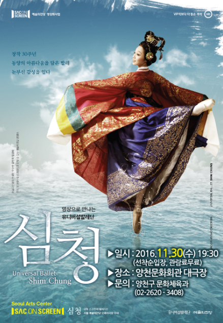
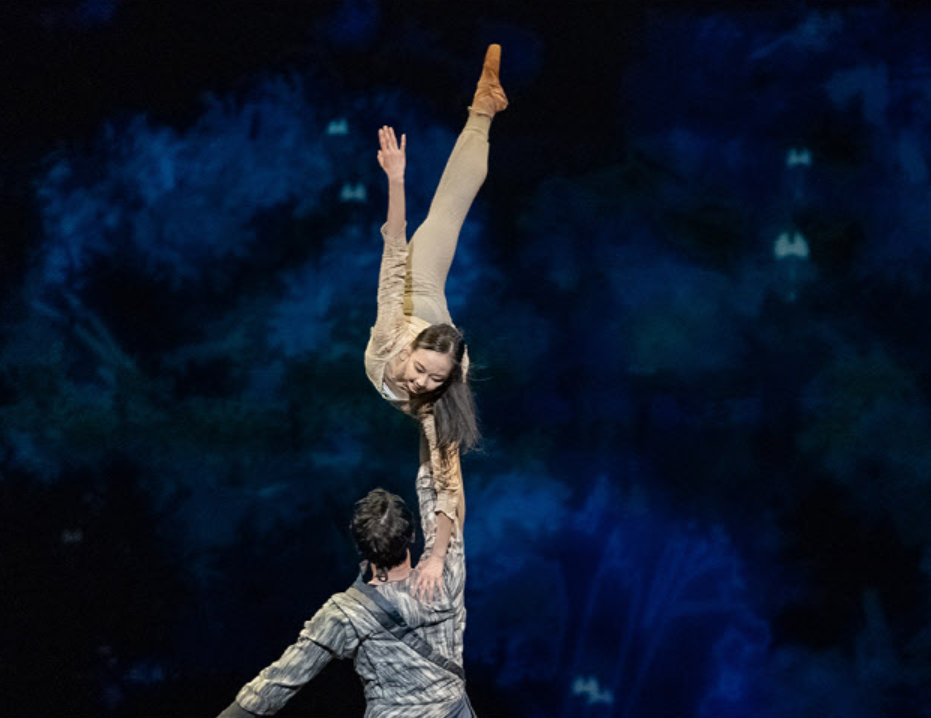
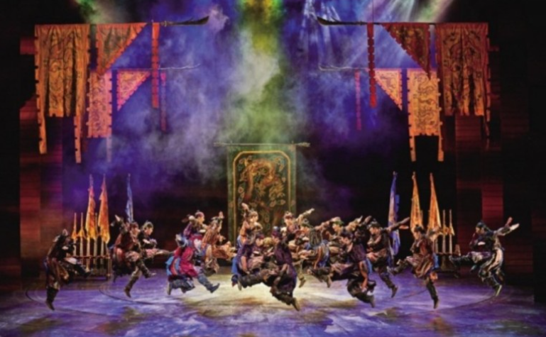
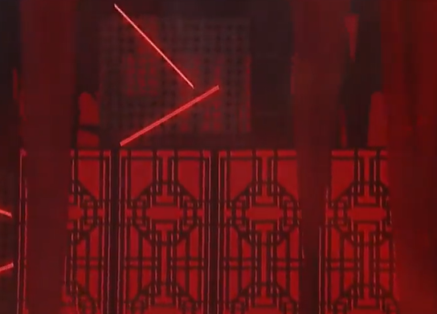
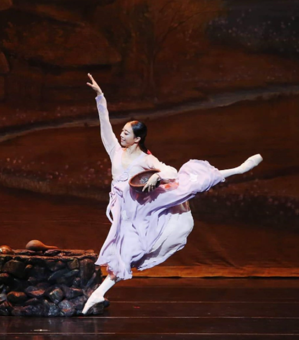

뮬란은 'reflection'처럼 잔잔하고 우아한 선율이 돋보이는 음악이 여러 개 있다. 이러한 음악에 약간의 편곡을 더해
음악이 표현하고자 하는 이야기를 무용으로 표현하고, 이야기를 덧붙인다면 새로운 시도로 '뮬란'을 활용하는 것으로 볼 수 있을 것이다.

뮬란의 OST "reflection"을 현대 무용으로 아름답게 표현했다.
현대 무용에서 중요한 것은 선인데, 이를 잘 살릴 수 있도록 하늘하늘한 옷을 입되 강인함을 나타낼 수 있는 붉은 옷을 입어
중국풍의 느낌을 살림과 동시에 뮬란이 강인한 존재였다는 점을 보여준다. 무용 역시 솔로 파트에 초점을 두는 것이 아니라,
군무에 초점을 두어 훈련 받은 군사 느낌이 나게 하면 뮬란 특유의 강인한 분위기를 잘 살릴 수 있으리라고 생각된다.
다만 강함이 단순히 힘뿐만이 아니라는 뮬란에서 볼 수 있듯이, 뮬란이 '지혜'를 활용해 문제를 해결하는 모습에서는
누구보다 부드럽고 유려한 움직임을 하면서 부드럽고 융통성 있는 지혜를 지닌 뮬란이 결국 모두를 구했다는 점을 강조한다.
뮬란은 무용뿐만 아니라 발레로도 만들어질 수 있는 여지가 있다. 이미 유명한 고전소설 중 하나인 춘향전과 심청전도 발레로 창작된 바가 있기에
'뮬란'도 공연에 맞도록 이야기를 다듬고, 발레 특유의 클래식한 요소를 더 추가한다면 충분히 발레로도 제작될 수 있을 것이다.

발레로 제작된 '춘향'의 포스터
'발레, 춘향'은 아름다운 분위기로 이몽룡과 성춘향의 사랑 이야기를 아름답게 살리면서도, 한복을 통해서 동양적인 미를 놓치지 않는 모습을 선보였다.

발레로 제작된 '심청'의 포스터
발레 '심청'은 애절한 연기를 통해 심청의 효를 강조했으며, 특히 그녀가 왕후가 되었을 때 거대한 스케일의 안무로 좌중을 압도한 바 있다.
'춘향'과 '심청'의 발레 활용 의의는 동서양의 아름다운 조화에서 찾을 수 있다. 서양에 다소 생소할 수 있는 효 사상을 아름다운 러브 스토리,
화려한 무대 세트, 다채로운 의상, 수준 높은 테크닉을 통해 훌륭하게 표현했으며 이를 토대로 발레의 성공적인 역수출 사례를 만들었다.
또한 익숙했던 심청, 춘향전을 발레로 재탄생시키면서 고전에만 머물지 않고 현대와의 적절한 조화를 이루었다.
뮬란 역시 이런 점을 강조해서 발레로 만든다면 동서양의 미가 잘 어우러진 작품이 완성될 수 있을 것이다.

뮬란과 유사한 창작 발레 '호이 랑'
발레 '뮬란'의 분위기를 가장 잘 만들어내는 것은 무대 세트, 의상, 안무라고 생각한다. 발레 '뮬란'에서 음악도 중요한 몫을 하지만, 뮬란은 이미 중요한 OST들이
여러 개 있기에 음악 외에 무대 세트나 의상, 안무가 더 주목받으리라고 생각한다. 우선 무대 세트는 화려하되 쉽게 변화할 수 있는 느낌으로 꾸미는 것이 좋을 것 같다.
발레이니만큼 초반에 분위기를 주목시키면서 동시에 안무하는 데 방해가 되지 않는, 그러나 동시에 중국풍을 살린 붉은 느낌의 세트장을 조성하는 것이 필요하다고 생각된다.

붉은 무대를 배경으로 하는 뮤지컬 명성황후

중국풍의 붉은 배경을 꾸민 무한도전 '토토가' 중 이정현의 무대
의상은 중국풍 의상을 기반으로 한다. 다만 뮬란이 처음에는 여성스러운 복장을 했다가, 군인이 되어 나라를 지키는 갑옷을 입고, 후반부에도 여성의 옷을 입었으나
실용성이 있었다는 점을 생각해 볼 때 겉의 옷을 여리여리한 느낌으로 만들되, 겉옷을 벗으면 속에 갑옷 형태의 전통 복장이 드러나는 형식으로 의상을 재단하고자 한다.

여리여리한 느낌의 발레복. 이를 벗으면 갑옷 모양의 옷이 나오도록 한다.
안무는 뮬란의 지혜를 표현할 때는 독무를 하지만, 군인으로서의 면모를 강조할 때는 군무로 표현하는 것이 좋다고 생각한다. 군무로 역동성을 표현하는 것이 좋은 이유는 다음과 같다.
1) 군무에게는 독무가 따라갈 수 없는 에너지와 역동성이 있다. 관객들은 이 에너지에 흠뻑 젖으며 나라를 지키기 위해 투쟁했던 군인들의 힘을 느낄 수 있다.
2) 뮬란이 군인으로서 훈련하는 모습을 군무로 표현함으로써 비록 성별은 다르지만 모두 나라를 위해 최선을 다한 사람이라는 느낌을 줄 수 있다.
3) 군인 특유의 '각 잡힌' 느낌을 깔끔한 군무를 통해 잘 표현할 수 있으리라고 생각한다.
마지막으로 뮬란이 모두를 구한 공로로 황제의 감사 인사를 받는 부분에서는 처음에는 뮬란의 독무로 시작했다가 나중에는 단체의 군무로 끝을 맺으려고 한다.
이러한 방식은 뮬란 자신의 지혜가 모두를 구하고, 처음에는 편견 어린 시선으로 그녀를 바라보았지만 결국 모두가 그녀를 인정하게 되었다는 메시지를
충분히 전달할 수 있다고 생각한다.